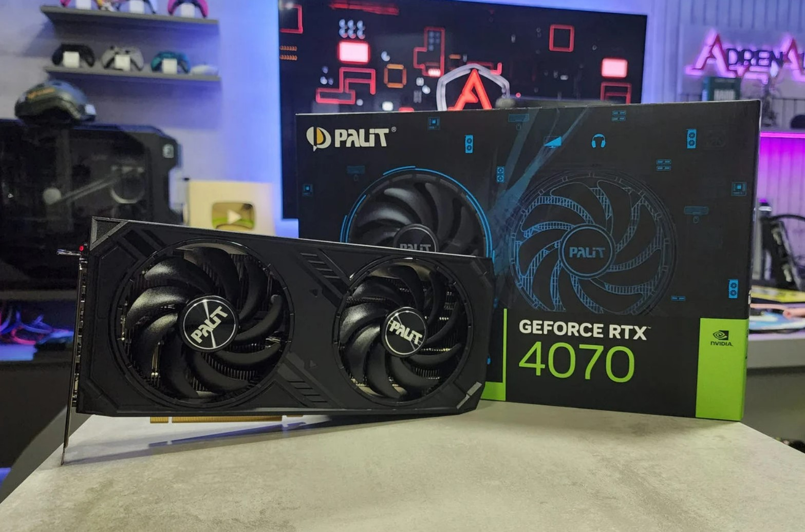
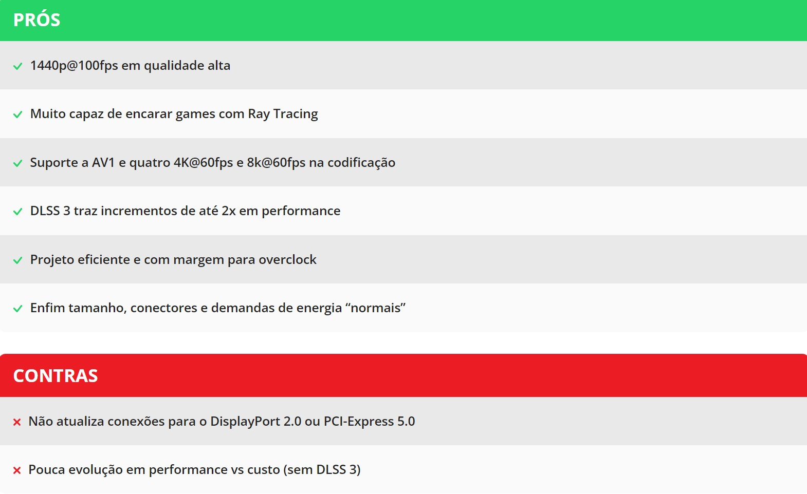

NVIDIA GeForce RTX 4070
A NVIDIA apresentou, nesta quarta-feira (12), a nova placa de vídeo da empresa, GeForce RTX 4070. O modelo faz parte do segmento intermediário premium para games com a arquitetura Ada Lovelace, a mais recente da companhia, fabricada em 5 nm. A placa estará disponível para compra a partir de amanhã, 13 de abril.

A NVIDIA GeForce RTX 4070 conta com uma GPU AD104, com Tensor Cores de 4a geração e 5.888 núcleos CUDA. Segundo as especificações oficiais, a placa terá uma frequência base de atuação de 1920 MHz e clock turbo de 2475 MHz. No quesito memória, a nova placa possui 12 GB de memória GDDR6X e 36 MB L2.
Já na área de gasto de energia, a NVIDIA calcula que o gasto médio da RTX 4070 em games será de 186 W e o TGP será de 200 W.
Entre as funções disponíveis no novo modelo, a GeForce RTX 4070 também se aproveita do DLSS 3, que melhora consideravelmente o desempenho das placas em games, inclusive se comparado com versões anteriores da tecnologia. Além disso, a GPU conta com encoders AV1 e H.264.
Preço, disponibilidade e comparativos com outras gerações passadas
A NVIDIA lançou a NVIDIA GeForce RTX 4070 dia 13 de abril de 2023, o modelo já estará disponível para compra nas lojas, inclusive em território nacional. O preço sugerido no lançamento é de R$ 4.999,00.
O modelo chega ao mercado estrangeiro por US$ 599, mesmo valor pela qual a NVIDIA RTX 3070 Ti foi lançada, mas o modelo atual conta com especificações bastante superiores, o que a companhia classifica como um salto grande entre gerações.
A GeForce RTX 4070
A GeForce RTX 4070 é baseada no chip AD104, com um total de 5888 núcleos CUDA, capazes de atingir 29 TFLOPS através do shadders, combinados com 46 núcleos RT da terceira geração da tecnologia da Nvidia, atingindo até 67 RT-TFLOPS e 184 núcleos tensores da quarta geração podendo operar em até 466 Tensor-FLOPS através da técnica de esparcividade (dispersividade).
Acompanhando a melhoria de outras placas da linha RTX 40, há uma grande quantidade de cache nível 2 (L2 cache). Enquanto a RTX 3070 Ti trazia aproximadamente 4MB de L2 cache, esse valor sobe para 36MB na RTX 4070. Falando em memórias, a RTX 4070 traz 12GB GDDR6X em uma interface de 192-bit, operando em 21 GHz, o que torna ela similar ao que equipa a RTX 4070 Ti e ajuda a placa a esquivar de algumas polêmicas.
A placa tem um consumo total de 200 W (TGP), o que enfim traz a série RTX 40 para uma situação interessante. O projeto Founders vem com um conector de energia PCIe 5 com 16 pinos, com um adaptador para dois cabos de oito pinos no tradicional formato PCIe, entregando 300W. Mas como os requerimentos de energia são baixos, há projetos que poderão operar com apenas um conector de 8 pinos. Isso entrega apenas 150W, mas com os 75W adicionais via slot PCIe, é possível vários modelos com apenas um conector tradicional de 8 pinos e tudo ficar com folga dentro das especificações, sobrando ainda 25W de alimentação, bem como modelos com dois conectores tradicionais, para entregar mais margem de alimentação para overclock.
Vale a pena comprar uma GeForce RTX 4070?
Na medida em que a microarquitetura Ada Lovelace é dimensionada para baixo começamos a ver muito potencial que havia sido mascarado em projetos excessivamente robustos, conectores novos de energia com altas demandas e, especialmente, preços de lançamento altos. É notável o avanço em termos de portabilidade e consumo, trazendo enfim uma placa que é um update viável para quem não quer fazer upgrades em fonte, usar adaptadores de energia ou até mesmo trocar o gabinete por conta das insanidades que rolaram em muitos modelos RTX 40 até o momento.
Há ganhos de 15% sobre placas antecessoras de mesmo custo, e com o DLSS 3 o salto pode chegar a 80%.
Temos avanços? Sim, há alguns discretos. Aqui o comparativo deve ser não com a RTX 3070, mas sim com a RTX 3070 Ti, placa que chegou com o preço de lançamento sugerido de US$ 599, o mesmo praticado na RTX 4070. Aqui vemos ganhos de performance na casa dos 15% em games, algo que não enche tanto os olhos de uma geração para a próxima, mas em aplicações profissionais isso é ampliado para algo entre 30 a 50% – aí sim uma evolução relevante – enquanto games com Ray Tracing podem apresentar uma melhora de até 30%, resultado da arquitetura mais eficiente para esse tipo de função.
Com preço semelhante e entregando mais performance – mesmo que não muita – é nesse momento em que o DLSS 3 aparece não como uma necessidade, mas como um diferencial. Habilitando esse recurso temos saltos que vão de 30 a 80% na performance, algo que tem potencial de mudar em muito a experiência do gamer, especialmente em cenários em que a latência dos comandos não está muito alta, e que essa responsividade não é algo crítico. Nesses games compatíveis, temos um produto que passa a ser até 2x melhor que a RTX 3070 Ti, e um upgrade gigantesco frente a placas mais antigas, sem suporte ao DLSS 3 ou mesmo qualquer geração do DLSS.
Enfim um produto da série RTX 40 sem demandas de novos conectores, porte excessivamente grande ou consumo altos de energia, tornado esse o upgrade mais relevante para quem quer dar um up em sua máquina.
Assim enfim temos um produto começando a entregar uma opção de upgrade da família RTX 40 com preços menos impeditivos, e com parceiras trazendo formatos mais convencionais, tanto em tamanho quanto no conector de energia. Para quem está na série RTX 30, especialmente os modelos high-end, não vão ter um incremento relevante de performance aqui. Mas se você está em uma placa RTX 20 ou mais antiga, a RTX 4070 é um upgrade bastante válido, já entregando um pouco mais de performance que as opções que haviam até o momento no mercado, e com a compatibilidade com o DLSS 3 para saltos de fluidez e taxa de quadros nos games compatíveis.
